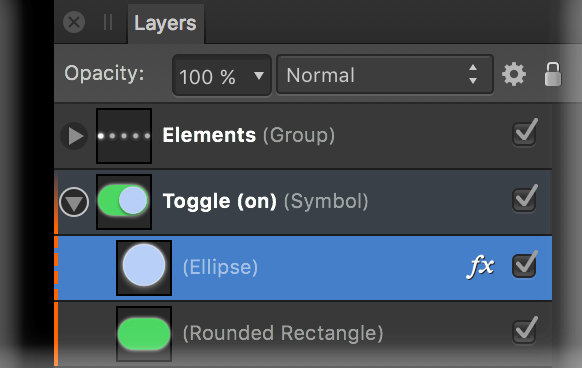

A symbol is an intelligent object that can be placed repeatedly in your document. Editing any one of these symbols on the page will automatically and instantly update all instances of that symbol.
Symbols offer a highly efficient way of working, suitable for 'repeating' elements of design that are liable to change, e.g. logos, branding, and buttons, as well as specific adjustments. By avoiding having to edit the same elements multiple times, a symbol can be edited just once with all instances of that symbol updated automatically, even across multiple artboards. You also have the option to edit any symbol instance independently of others.
Symbol links are automatically made when creating multiple instances of a symbol. This linkage is fundamental to symbol functionality and, by default, allows changes to symbols to be reflected across all instances.
Synchronization allows editing across all symbols, while unsynchronization means all future editing is restricted to the current object and no longer affects the other symbol instances, until synchronization is enabled again.
If a symbol instance no longer needs to be a symbol, it can be detached (made into a standard object) without affecting synchronization. If all symbol instances no longer need to be symbols, you can revert them all back to standard objects.
You can perform any edit to symbols just as you would to a standard object. You can:
As a useful visual aid, symbols are indicated by an vertical orange bar on their layer entries in the Layers panel. If a symbolized object has been edited when unsynchronized a dashed orange bar is shown instead.

Do one of the following:
Once there are multiple instances on your page, symbol linkage allows synchronization to occur across objects.
Detaching reverts a symbol back to a standard object while keeping synchronization enabled.
All symbol instances will revert to standard objects.